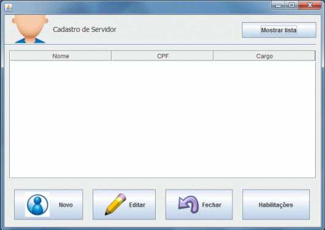

Servidores
Ajuda

Cadastramento de Servidores
A tela principal para cadastramento de servidores lista todos os servidores da unidade.

1. Mostrar lista: exibe uma lista com os servidores da unidade.
2. Novo: Abrir tela para cadastramento de novo servidor.
3. Editar: Ao selecionar um servidor é possível editar suas informações.
4. Fechar: Fecha a tela de cadastro de servidor.
5. Habilitações: Apresenta a janela do servidor escolhido ou abre a janela para cadastrar uma habilitação, caso este não possua.
Ao clicar em Novo será exibido a seguinte tela:

Nesta tela estão disponíveis as seguintes ações:
1. Novo: limpa os campos e permite cadastrar um novo servidor.
2. Salvar: o clique no botão "Salvar" salva, após as devidas validações, os dados digitados nos campos da tela no Banco de Dados, tanto na inclusão de um novo usuário quanto na edição de um já existente.
2. Fechar: o acionamento deste botão retorna à tela principal, descartando quaisquer alterações realizadas e não salvas.